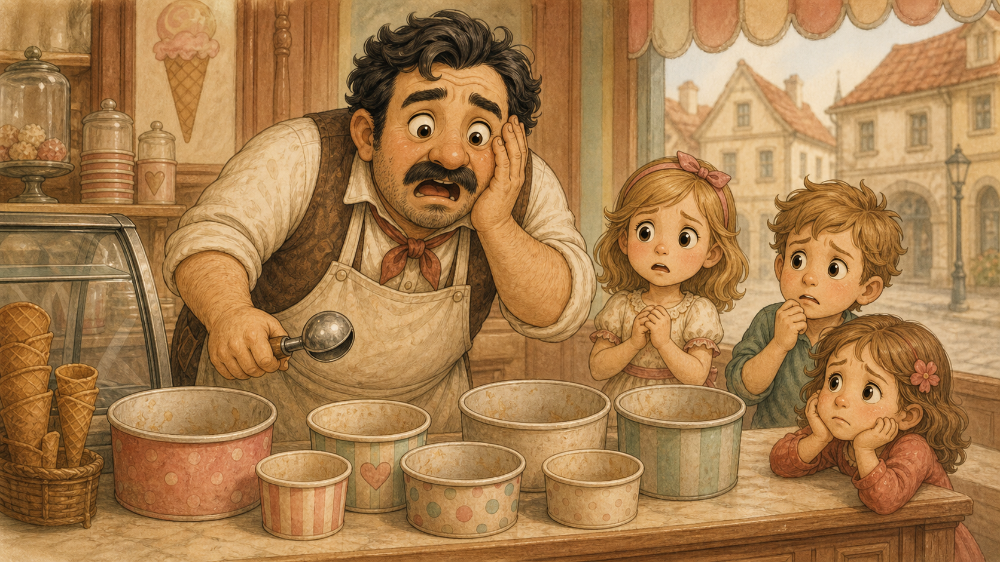

Rozprávka 5
Ako v meste došla zmrzlina

V meste sa jedného teplého dňa stala taká hrozná vec, že aj veža na radnici vyzerala, akoby sa prekvapene naklonila.
Došla zmrzlina.
Nie jedna príchuť.
Ani dve.
Nie iba pistáciová, čo by niektorí dospelí možno zniesli s dôstojnosťou a deti len s podozrením, že svet prestáva fungovať správne.
Došla všetka zmrzlina.
V zmrzlinárstve zostali prázdne nádoby, smutné naberačky a zmrzlinár, ktorý stál za pultom s utierkou v ruke a tváril sa, akoby mu niekto zrušil leto.
Pred obchodom stáli deti. Netlačili sa ako obyčajne, keď sa každý snaží byť pri čokoládovej prvý. Stáli ticho, vážne a nešťastne, ako keby čakali na rozsudok.
„Nie je ani jahodová?“ spýtalo sa malé dievčatko.
Zmrzlinár smutne pokrútil hlavou.
„Ani čokoládová?“ spýtal sa chlapec, ktorý už vyzeral, že pre každý prípad prestáva veriť dospelým.
„Ani čokoládová.“
„Ani prekvapenie?“
Zmrzlinár sa chytil za srdce.
„Ani prekvapenie.“
To už bolo naozaj vážne. Príchuť prekvapenie bola síce niekedy až príliš prekvapivá, ale stále to bola zmrzlina, a pri zmrzline sa človek nemá správať nevďačne.
Príčina bola jednoduchá a pritom strašná: neprišiel cukor.
Každý týždeň mal do mesta doraziť voz z cukrovaru za mestom. Viezol vrecia bieleho cukru, hnedého cukru, jemného cukru, kockového cukru, cukru na posypanie, cukru do sirupov, cukru do polevy a trochu cukru pre prípad, že by zmrzlinár povedal: „Ešte trošku prisladíme.“
Lenže v ten deň voz neprišiel.
Niekde sa zasekol.
A keď sa zasekne voz s cukrom, nezasekne sa len voz.
Zasekne sa radosť.
V tom istom čase bola Lada v kráľovskej záhrade s dráčikmi.
Odkedy ju zachránili v pralese a Poletucha ju večer odniesla späť do paláca, smela sa s nimi stretávať. Kráľovná síce pri každom stretnutí zdvihla obočie, ale už nevyzerala vystrašene, len tak kráľovsky opatrne. Mama dračica na hore zasa usúdila, že priateľstvo s princeznou sa môže niekedy hodiť.
A tak sa v záhrade začalo bežne diať to, čo sa v záhradách diať má: deti sa hrali. Teda deti a dráčiky.
Mokroš sedel pri jazierku a robil na hladine malé vlnky. Zlatá rybka mu rozprávala svoj príbeh o kaprovi, ktorý tvrdil, že je veľryba, hoci Mokroš ho počul už druhýkrát a Lada asi stý.
„A potom som mu povedala,“ rozprávala rybka, „že ak je veľryba, nech mi ukáže more.“
„A ukázal?“ spýtal sa Mokroš.
„Nie. Urazil sa a schoval sa za lekno. Veľryby sa za lekno neschovávajú, to bol môj dôkaz.“
Uhlík zatiaľ obchádzal skleník s mäsožravými lianami. Tváril sa, že sa ich nebojí, len si od nich udržiava odborný odstup. Jedna liana sa prilepila na sklo a sledovala ho tak sústredene, že Uhlík o krok ustúpil.
„Ja neustupujem,“ povedal.
Lada sa usmiala.
„Len meníš miesto?“
„Presne.“
Poletucha sedela na vrchu živého plota, z ktorého mala najlepší výhľad na labyrint aj na pol mesta, a tvrdila, že je strážna služba. V skutočnosti sa jej jednoducho páčilo sedieť vysoko.
Spievanka s Ladou stavali z kamienkov, listov, vetvičiek a troch gombíkov malý palác. Mal tanečnú sálu, dielňu, komnatu pre bábiky, padací most a miesto na koláče.
„V našom paláci dielňa nie je,“ povedala Lada.
Spievanka sa na ňu pozrela s hlbokým súcitom.
Práve premýšľali, či má mať palác aj tajnú šmykľavku, keď sa z labyrintu ozval krik.
Zelené chodbičky sa rozšumeli a von vybehla skupina detí z mesta. Boli zadýchané, červené v tvárach a niesli správu, ktorá bola podľa nich vážnejšia než požiarny poplach, roztrhnuté nohavice aj zákaz skákania do fontány.
„Lada! Dráčiky!“
„Čo sa stalo?“ spýtala sa Lada.
Najmenší chlapec sa nadýchol tak zhlboka, akoby išiel povedať celú básničku.
„Nie je zmrzlina.“
Tá veta dopadla do záhrady ako kameň do ticha.
Uhlík sa narovnal.
Mokroš prestal čľapkať.
Poletucha zletela zo živého plota.
Spievanka pustila gombík.
A Lada zbledla presne tak, ako blednú princezné, keď pochopia, že deň sa práve zmenil z obyčajného na historický.
„Akože nie je?“ spýtal sa Mokroš.
„No nie je,“ vysvetľovalo dievčatko. „Zmrzlinár nemá cukor.“
„Ani na čokoládovú?“ spýtal sa Uhlík.
„Ani na čokoládovú.“
„Ani na prekvapenie?“ šepla Spievanka.
Deti smutne pokrútili hlavami.
„Zahajujem vyšetrovanie!“ povedala Poletucha.
„Zmrzlinové vyšetrovanie,“ spresnil Mokroš.
A tak sa hra skončila a začala sa výprava.
Dráčiky s Ladou sa vybrali do mesta. Záhradný elf, ktorý práve strihal živý plot, sa ich spýtal, kam tak bežia. Keď počul, že došla zmrzlina, prestrihol si od rozrušenia kúsok rukáva a odpadol.
Na námestí stáli deti pred zmrzlinárstvom v dlhom, nešťastnom rade.
Nebol to rad na zmrzlinu.
Bol to rad zúfalstva.
Zmrzlinár vybehol dráčikom naproti a rukami rozhadzoval tak prudko, že jeho utierka chvíľu vyzerala ako biela zástava.
„Cukor mal prísť ráno,“ vysvetľoval. „Cez južnú bránu, po starej ceste cez pustatinu. Voz nikde. Kôň nikde. Cukor nikde. A ja mám v obchode viac prázdna než zmrzliny! Rozumiete? Prázdno!“
„Cez pustatinu?“ spýtala sa Lada.
Zmrzlinár ukázal smerom za mesto.
„Suché miesto. Skaly, prach, bodliaky a stará studňa, v ktorej už dávno nie je voda, ale stále vyzerá ako studňa.“
Poletucha tú cestu poznala z výšky. Uhlík okamžite navrhol bicykle. Mokroš súhlasil, lebo každé vyšetrovanie je lepšie, keď sa naň ide rýchlo. Spievanka súhlasila tiež, lebo jej Pesnička vedela hrať napínavo, ak šliapala nerovnomerne.
Lada bicykel nemala. Zo stajne jej preto požičali malého poníka Hrušku. Hruška bola nízka, guľatá a tvárila sa, že by najradšej vyšetrovala z bezpečia maštale.
„Neboj sa,“ povedala jej Lada.
Hruška sa pozrela na Uhlíkov raketový bicykel, na Mokrošovho kvapkajúceho Čľupáka, na Poletuchinu Vetromilku a na Spievankinu Pesničku, ktorá si práve sama od seba cinkla a odfrkla si.
Bála sa, ale profesionálne.
Vyrazili cez južnú bránu.
Za mestom sa dlažba skončila a cesta sa zmenila na prach. Najprv obyčajný prach. Potom hustejší prach. A napokon taký prach, že aj prach by musel odkašliavať. Po stranách cesty rástli bodliaky a suché kríky. Horúci vzduch sa v diaľke vlnil ako priehľadná záclona.
Mokrošovi sa pustatina nepáčila. Bolo v nej málo vody, málo tieňa a príliš veľa všetkého, čo škrabalo.
„Toto miesto je pokazené,“ vyhlásil.
„Je suché,“ povedal Uhlík spokojne.
„Presne. Pokazené.“
Poletucha krúžila nad nimi a hľadala stopy. Spievanka šliapala pomaly, aby jej bicykel hral len tiché fi-fi-fí a neprezradil ich celej krajine. Lada sedela na Hruške, držala sa hrivy a tvárila sa odvážne, hoci Hruška sa tvárila, že odvážna bude až po návrate.
Netrvalo dlho a Poletucha našla prvé stopy.
Na prašnej ceste boli hlboké koľaje po voze. Vedľa nich odtlačky konských kopýt. A potom niečo zvláštne: veľké okrúhle stopy, akoby po ceste kráčalo niečo s hrncami namiesto nôh. Okraje stôp sa trblietali bielymi kryštálikmi.
Mokroš zoskočil z bicykla a naklonil sa k jednej stope.
„Cukor.“
„Neolizuj to,“ povedala Lada skôr, než stihol vyplaziť jazyk.
Mokroš sa zarazil.
„Chcel som overiť dôkaz.“
„Detektívi dôkazy neolizujú.“
„Vodní detektívi možno áno.“
„Nie.“
Mokroš si povzdychol a prijal to ako zatiaľ neoverené, ale princeznovsky pevné pravidlo.
Koľaje zabočili z cesty ku skalám. Tam našli prvé roztrhnuté vrece. Ležalo medzi bodliakmi a na boku malo odtlačok veľkej lepkavej laby. Spievanka v ňom našla chumáčik bielej kučeravej srsti, celý obalený cukrom.
„Cukrové chlpy,“ povedala.
Uhlík sa zamračil.
„To neznie ako niečo, čo chcem mať v papuli.“
„A predsa to niekto mal,“ povedala Poletucha zhora.
Potom sa spoza skál ozval zvuk.
Nebolo to zavrčanie.
Bolo to hlasné, spokojné a veľmi plné:
„MŇAF!“
Dráčiky, Lada aj Hruška stuhli. Hruška sa pokúsila vyzerať ako kameň, čo sa jej takmer podarilo, lebo mala správny tvar aj náladu.
Za skalami našli plytkú kotlinu. Uprostred stál prevrátený voz s cukrom. Kôň mal opraty zamotané okolo suchého stromu a pokojne obhrýzal bodliak, akoby sa nič mimoriadne nedialo. Vozník sedel na skale obďaleč, držal si klobúk oboma rukami a vyzeral ako človek, ktorý si práve overil, že s mlsnou príšerou sa netreba hádať o desiatu.
Pri voze sedela príšera.
Bola veľká ako menšia stodola, okrúhla ako sud s nohami a celá pokrytá bielymi chlpatými chumáčmi, do ktorých sa lepil cukor. Mala krátke ruky, veľké oči a papuľu plnú zubov. Niektoré boli ostré, niektoré oblé a jeden zub vyzeral ako malá krivá lyžička.
Príšera držala vrece cukru a sypala si ho rovno do papule.
Uhlík chcel hneď vybehnúť. Mal v sebe totiž statočnosť aj hnev a cestu medzi nápadom a činom si zvykol dávať skratkou.
Lada ho chytila za krídlo.
„Nie oheň.“
„Prečo?“
„Cukor horí.“
Uhlík sa zatváril sklamane.
„Všetko zábavné horí.“
K príšere sa teda priblížili opatrnejšie.
Nevyzerala zlá. Vyzerala mlsná.
To je niečo iné. Zlá by chcela robiť zle. Mlsná chcela robiť mňam. Lenže keď niekto kvôli mňam prevráti voz, zamotá koňovi opraty a zastaví výrobu zmrzliny v celom meste, začína to byť problém aj bez zloby.
„Ten cukor patrí zmrzlinárovi,“ povedala Lada.
Príšera zdvihla hlavu. V papuli mala toľko cukru, že jej slová vychádzali mäkko a lepkavo.
„Bol tu.“
„To neznamená, že je tvoj,“ povedal Uhlík.
Príšera sa zamyslela. Vyzerala úprimne prekvapená, že cítiť cukor a zjesť cukor nie je to isté ako mať na cukor právo.
„Nie?“
„Nie,“ povedali všetci zborovo, teda okrem Hrušky. Hruška si ticho odfrknla, čo znamenalo približne to isté.
Príšera si povzdychla. Z papule jej vyšiel sladký lepkavý dych. Dráčikom sa na chvíľu zlepili pery.
„Mmmf!“ povedal Uhlík nahnevane.
„Mmmf,“ dodal Mokroš.
„Mmmf-fí,“ povedala Spievanka, lebo aj so zlepenými perami vedela byť hudobná.
Poletucha z výšky zistila, že veľká časť vriec je ešte zachránená. Ak príšeru zastavia hneď, zmrzlina sa dá obnoviť.
Len bolo treba prísť na to ako.
Mokroš navrhol vodu, lebo cukor sa vo vode rozpúšťa, ale Lada mu pripomenula, že zmrzlinár potrebuje cukor suchý. Uhlík navrhol zastrašenie, ale príšera bola priveľká a možno by sa iba zľakla tak, že by zjedla ešte jedno vrece na upokojenie. Poletucha navrhla odlákať ju, ale nebolo jasné, čím sa dá odlákať niekto, kto sedí priamo pri cukre.
Nakoniec sa na ňu Lada pozrela inak než ostatní.
Nie ako na príšeru ale ako na niekoho, kto možno nikdy nepočul, že so závislosťou môže prestať.
„Ako sa voláš?“ spýtala sa.
Príšera sklopila vrece.
„Neviem.“
„Nevieš?“
„Nikto sa ma nepýta. Väčšinou len kričia.“
Spievanka okamžite spozornela. Podľa nej tvor bez mena potreboval meno skôr než pokarhanie.
„Čo tak Cukrožrútka?“ navrhla.
Príšera si slovo chvíľu prevaľovala v hlave.
„Pravdivé.“
„Ale trochu neslušné,“ povedala Lada. „A čo Mlsanda?“
Príšera sa usmiala. Bolo to lepkavé a milé.
„Mlsanda.“
Od tej chvíle sa s ňou dalo rozprávať ľahšie.
Vysvitlo, že Mlsanda vlastne nebola hladná. Mala len stále chuť na sladké. Keď zacítila voz s cukrom, prišla za vôňou, a keď ho našla, nevedela prestať. To dráčiky chápali viac, než by bolo vhodné priznať, lebo všetci už aspoň raz jedli zmrzlinu tak dlho, že prestali až keď ich už bolelo bruško.
Lenže mesto potrebovalo cukor späť.
Lada, Spievanka a Mokroš začali premýšľať, čo by sa dalo urobiť, aby Mlsanda nemusela prepadávať vozy. Zmrzlinár mal predsa veľa ovocných zvyškov, nepodarených sirupov a príchutí, ktoré už ani deti nechceli skúšať bez svedka. Baba Jaga vedela z čudných vecí vyrábať ešte čudnejšie veci.
„Lízacie kamene,“ povedala Spievanka zrazu.
Všetci sa na ňu pozreli.
„Sladké lízacie kamene. Tvrdé. Veľké. Z ovocných zvyškov a sirupov. Jeden vydrží týždeň.“
Mlsanda zdvihla hlavu.
„Týždeň?“
„Možno dva,“ povedal Mokroš. „Ak nebudeš hryzkať.“
Mlsanda sa zatvárila, že hryzkať nebude.
Nikto jej veľmi neveril.
„Baba Jaga to určite vymyslí,“ povedala Lada. „Ale cukor musíš vrátiť.“
Mlsanda sa pozrela na vrecia.
Potom na Ladu.
Potom na dráčiky.
„A teraz?“
Lada sa zamyslela.
„Teraz dostaneš jednu lyžicu cukru za to, že prestaneš.“
„Veľkú?“
„Polievkovú.“
„Kráľovskú polievkovú?“
„Obyčajnú.“
Mlsanda smutne prikývla. Aj obyčajná lyžica cukru bola lepšia než žiadna lyžica cukru. Oblízala ju tak dôkladne, že sa leskla ako zrkadielko.
Potom pomohla postaviť voz na kolesá.
Ukázalo sa, že je nesmierne silná. Chytila voz zozadu a potlačila ho tak ľahko, akoby viezol pierka a nie vrecia cukru. Kôň sa tváril spokojne, lebo zrazu mal menej práce. Hruška sa tvárila opatrne, lebo každý, kto je silnejší než voz, si zaslúži rešpekt.
Cesta späť do mesta bola zvláštna a slávnostná.
Vpredu šiel voz s cukrom. Vozník držal koňa pri hlave a každú chvíľu sa obzeral, či si to celé náhodou nerozmyslí. Za vozom kráčala Mlsanda a tlačila ho. Občas si povzdychla nad vôňou cukru, ale držala sa statočne. Lada išla na Hruške vedľa nej a dozerala na dohodu ako malá kráľovná výpravy. Dráčiky jazdili okolo na bicykloch. Uhlík strážil vpredu, Mokroš kontroloval kolesá, Poletucha krúžila zhora a Spievanka hrala na Pesničke tichú víťaznú melódiu, aby sa Mlsande ľahšie odolávalo.
Keď dorazili k južnej bráne, deti ich zbadali prvé.
Správa sa rozbehla mestom rýchlejšie než koza, ktorá zacítila otvorený sklad kapusty.
Voz s cukrom sa vrátil.
Dráčiky ho našli.
Lada bola pri tom.
A za vozom ide veľká biela chlpatá vec, ktorá vraj už nikoho nežerie, len občas vzdychne.
Zmrzlinár vybehol pred obchod, a keď uvidel zachránené vrecia cukru, skoro sa rozplakal. Keď uvidel Mlsandu, skoro sa rozplakal druhýkrát.
„To je ona?“ spýtal sa.
Mlsanda sklopila hlavu.
„Prepadla voz,“ povedal Uhlík.
„Ale pomohla ho dotlačiť späť,“ dodala Lada.
Spievanka vysvetlila plán so sladkými lízacími kameňmi od Baby Jagy. Mokroš pripomenul, že zmrzlinár má dosť nepodarených sirupov. Zmrzlinár uznal, že najmä uhorkovo-makový by si zaslúžil nový osud.
A potom sa pustil do práce.
Mesto sledovalo, ako sa v zmrzlinárstve znovu rodí leto. Cukor sa sypal, smotana sa miešala, ovocie sa krájalo, nádoby sa plnili a naberačky cinkali. Najprv vznikla vanilková. Potom jahodová. Potom čokoládová. Potom malinová, medová, pistáciová, lieskovooriešková, škoricová a napokon nová príchuť s názvom Návrat cukru.
Bola taká sladká, že aj Mlsanda po pol kopčeku spokojne zatvorila oči.
„Svet znova začína dávať zmysel,“ povedala.
Keď boli prvé nádoby plné, zmrzlinár sa postavil pred dráčiky a Ladu. Vyhlásil, že zachránili zmrzlinu.
To znelo skoro ako zachrániť kráľovstvo.
V detských očiach možno ešte dôležitejšie.
A tak im sľúbil zmrzlinu zadarmo.
Navždy.
Ale rozumne.
Slovo rozumne zostalo visieť vo vzduchu ako lyžička nad posledným kopčekom. Nikto presne nevedel, čo znamená. Zmrzlinár tiež nie, ale cítil, že ho bude musieť vymyslieť skôr, než Mokroš príde na raňajky.
„Navždy?“ spýtal sa Mokroš potichu.
„Rozumne,“ pripomenula Poletucha.
„To je skoro navždy,“ povedal Uhlík.
„Nie,“ povedala Lada. „To je navždy s dospelým dodatkom.“
Deti dostali svoje kopčeky. Lada dostala veľký pohár zmrzliny s čerešňou navrchu. Mlsanda dostala malú misku Návratu cukru a sedela na okraji námestia tak opatrne, ako len dokáže sedieť bytosť veľká ako menšia stodola.
Potom sa jej stalo niečo zvláštne.
Pri poslednom obliznutí si chytila papuľu a do laby jej vypadol malý biely zub. Nebol strašidelný. Bol smiešny. Vyzeral ako krivá lyžička a trochu sa trblietal, akoby si v sebe pamätal všetok cukor, ktorý kedy videl.
„Môj mlsný zub,“ povedala Mlsanda smutne.
Lada ho opatrne zabalila do vreckovky.
„Odnesiem ho Babe Jage,“ povedala. „Tá bude vedieť, čo s ním.“
Baba Jaga totiž vedela z podivných vecí vyrobiť čarovné predmety. A z mlsného zuba príšery by určite vedela vyrobiť niečo veľmi čudné, možno užitočné a pravdepodobne trochu nebezpečné, ak by sa to nechalo bez dozoru.
Mlsanda dostala novú prácu. Nebude prepadať vozy. Namiesto toho bude pomáhať tlačiť ťažké náklady cez pustatinu. Zmrzlinár jej bude odkladať ovocné zvyšky a nepodarené sirupy a Baba Jaga z nich časom urobí sladké lízacie kamene.
„A keď dostanem chuť?“ spýtala sa Mlsanda.
Lada jej podala malý lístok so zmrzlinárovým znakom.
„Prídeš do mesta a povieš. Nezožerieš voz.“
Mlsanda prikývla.
„To bude nové.“
„Nové veci sú niekedy dobré,“ usúdila nahlas Spievanka.
Večer sa Lada vrátila do paláca s čokoládovou škvrnou na šatách a s mlsným zubom zabaleným vo vreckovke. Kráľovná si ju prezrela a pochopila, že jej dcéra zažila dobrodružstvo. Nie malé záhradné dobrodružstvo, pri ktorom sa stratí bábika v kríku. Skutočné dobrodružstvo s pustatinou, príšerou a zmrzlinou.
Tentoraz si kráľovná hneď našla čas.
Sadli si spolu pri čaji a Lada jej všetko porozprávala. O deťoch, ktoré prišli do záhrady. O prázdnom zmrzlinárstve. O stopách v prachu. O Mlsande. O zube, ktorý vyzeral ako lyžička.
Kráľovná počúvala a len občas sa spýtala, či sa niekomu niečo nestalo. Keď Lada povedala, že všetko dobre dopadlo a zmrzlina je zachránená, kráľovná prikývla s vážnosťou, akú si taká správa zaslúžila.
Na hore zatiaľ dráčiky rozprávali svojej mame, že majú u zmrzlinára zmrzlinu zadarmo.
Mama dračica pri slove zadarmo otvorila jedno oko. Pri slove navždy ho otvorila trochu viac. Pri slove rozumne ho zase privrela, lebo pochopila, že zmrzlinár ešte celkom nevie, čo urobil.
„Zachrániť zmrzlinára,“ povedala napokon, „bola výhodná vec.“
„Lebo zmrzlina?“ spýtal sa Mokroš.
„Lebo zmrzlina,“ povedala mama. „A lebo deti v meste si budú pamätať, kto im vrátil radosť do kornútikov.“
V tú noc zaspali dráčiky unavené, sladké a šťastné.
V meste sa opäť jedla zmrzlina.
Na ceste cez pustatinu už nikto neprepadával vozy s cukrom.
A v Ladinej komnate ležal na nočnom stolíku mlsný zub zabalený vo vreckovke. Bol tichý, biely a trochu ligotavý.
Nehýbal sa.
Nehrýzol.
Len sa občas v mesačnom svetle zaleskol, akoby vedel, že raz z neho Baba Jaga vyrobí niečo čarovné.